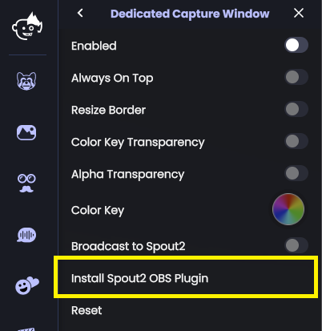
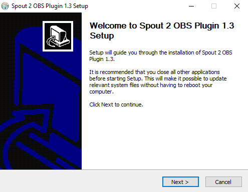
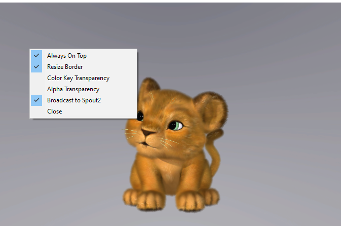
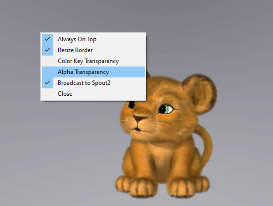
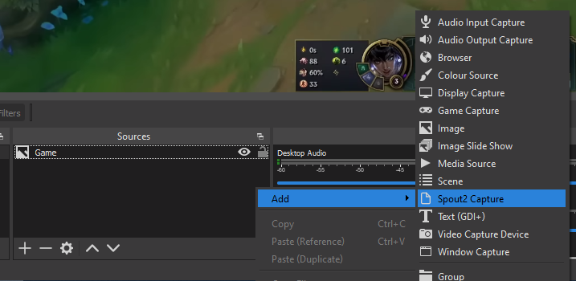
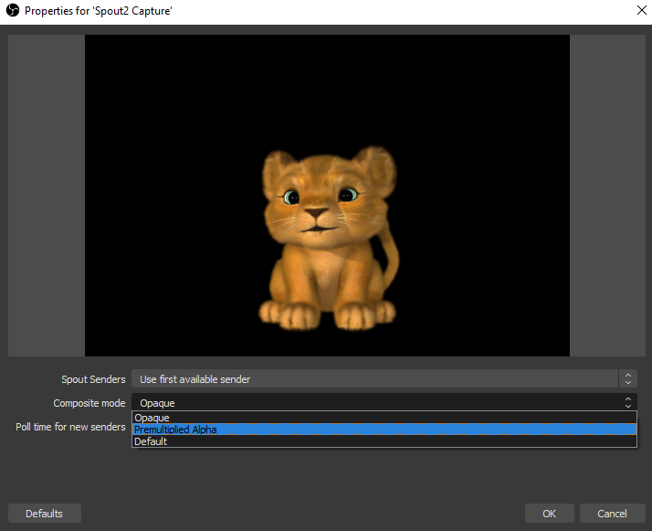
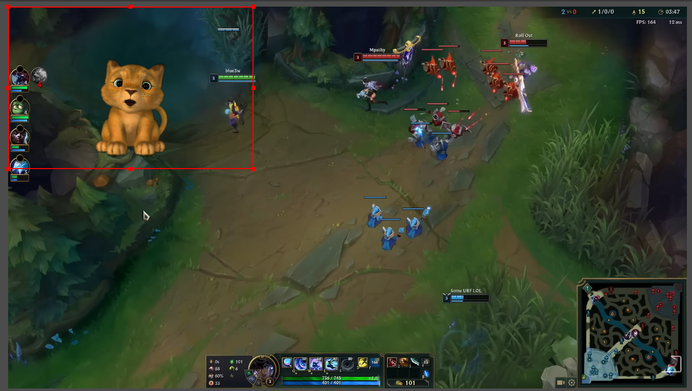
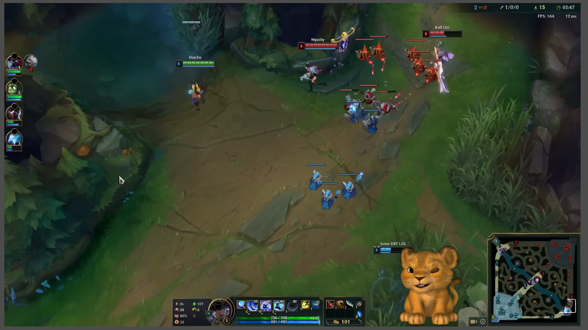

Alpha Transparency w/ OBS Spout2 Plugin (recommended)
We’ll use the Dedicated Capture Window from Animaze with the Broadcast to Spout2 option active and get the Animaze video frames in Animaze through the OBS Spout Capture source.
Spout2 is a video frame sharing system for Microsoft Windows which allows sharing the Animaze video frame with OBS in a very efficient manner. The Spout method isn’t limited to OBS, any other application that integrates the Spout2 library can get Animaze video frames through this method.
This method comes with the following advantages:
-
the most efficient method in terms of CPU/GPU resources usage
-
best transparency blending method as it uses alpha channel so furry will look great
Steps
(in Animaze - only needed for first-time use) We are going to install the Spout2 plugin that allows OBS to use a Spout2 source. Go to Settings > Dedicated Capture Window and click the Install Spout2 OBS Plugin option. Follow the installation instructions.


(in Animaze) Open the Dedicated Capture Window (hotkey Ctrl+S)
(in Animaze) Right-click on the Capture Window and click the Broadcast to Spout2 button

(in Animaze) Right-click on the Dedicated Capture Window and select the Alpha Transparency option. This will allow us to use a transparent background in OBS.

(in Animaze) Right-click on the Dedicated Capture Window and select the Alpha Transparency option. This will allow us to use a transparent background in OBS.
(in OBS) In the Sources section, right-click > Add and click the Spout2 Capture option. You will be prompted with an Properties dialog.

(in OBS) In the Properties options dialog change Composite mode to Premultiplied Alpha so we can get the background to become transparent.

(in OBS) You are done with the transparency, it’s now time to move the avatar where you need it in your stream.

Done and dusted!
